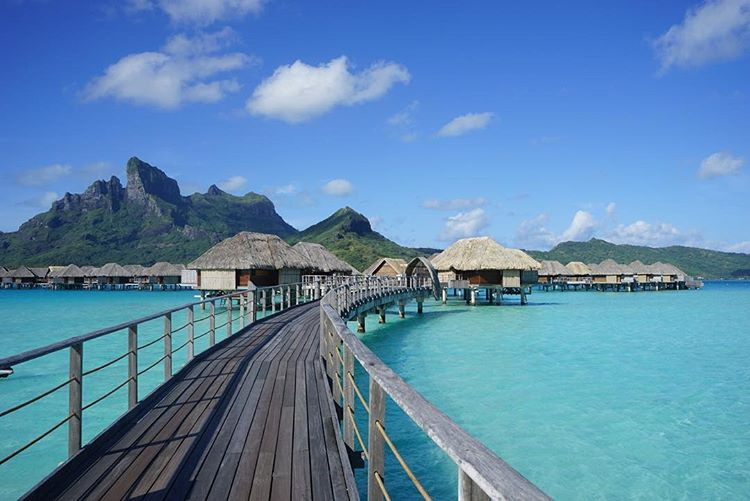
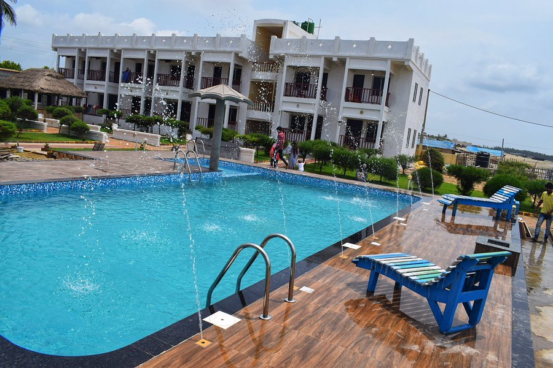

Travel Website
Suggestions Library (Suggestions For Your Travel):
Raichak [Near Ganges]

Raichak on Ganges is a collection of hotel,
resort, spa and theme based country homes beside the river Ganges, located at Raichak,
51 km from Kolkata, in the state of West Bengal in eastern India.
Vedic Village [Kolkata]

Vedic Village Spa Resort is a hidden gem,
nestled in the lap of nature just 20 minutes away from the international airport in Kolkata,
India. Built horizontally in the authentic architecture of Bengal villages, the world - class
luxury resort blends in completely with the uniqueness of the landscape. It combines tremendous
natural beauty and outdoor fun with unbeatable indoor luxury. A boutique getaway sprawling over
150 acres of fertile farmland greenery, sparkling lakes, coconut groves and a wealth of flora;
it is a haven for migratory birds, butterflies, squirrels and exotic species of plants.
Ecopark - Ajanta Hotel [Kolkata]

Eco Park (or Prakriti Tirtha) is an urban park
in New Town, Rajarhat, Kolkata and the biggest park so far in India. The park is situated on a 480
acres (190 ha) plot and is surrounded by a 104 acres (42 ha) waterbody with an island in the
middle.
Mandarmani [East Midnapore]

Mandarmani is a seaside resort village in
the state of West Bengal, India, and lies in East Midnapore district, at the northern end of the
Bay of Bengal. It is one of the largest seaside resorts of West Bengal, fast-developing. It is
almost 180 km from Kolkata Airport on the Kolkata - Digha route